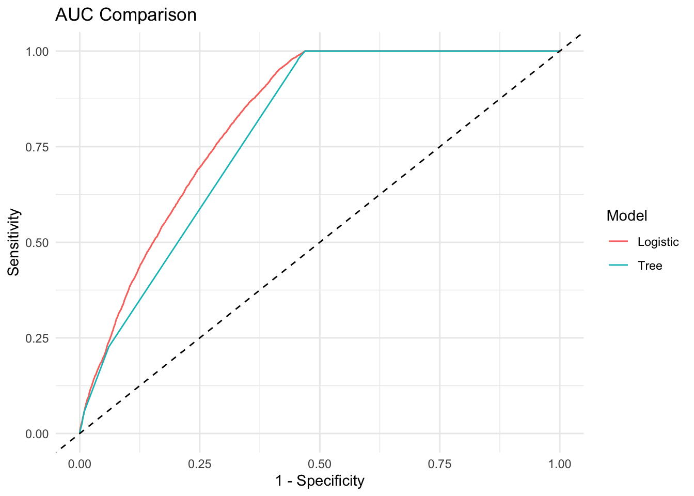

Logistic Regression Model
To identify patterns in ASSAULT 3 by considering various factors such as age, gender, race of the perpetrator, as well as environmental factors like temperature and weather conditions, we decide to build a logistic regression model to predict the likelihood of an arrest being for “ASSAULT 3 & RELATED OFFENSES”. This helps police understand under what circumstances such crimes are more likely to occur, aiding in the development of proactive policing strategies.
first,we use a binary response variable y is created to represent whether each arrest falls into this category. The data is then split into training and validation sets, we randomly select 80% to be training set, 20% to be validation set.
Logisitic Model result
Call:
glm(formula = y ~ ., family = binomial, data = data_train)
Coefficients: (3 not defined because of singularities)
Estimate Std. Error z value Pr(>|z|)
(Intercept) -2.456e+01 2.976e+02 -0.083 0.934232
ARREST_DATE 3.182e-04 7.500e-05 4.243 2.21e-05
LAW_CAT_CDF -2.260e-01 2.999e+02 -0.001 0.999399
LAW_CAT_CDI -9.190e-02 8.262e+02 0.000 0.999911
LAW_CAT_CDM 1.844e+01 2.976e+02 0.062 0.950582
LAW_CAT_CDV -6.683e-02 4.425e+02 0.000 0.999879
ARREST_BOROK 3.684e-01 1.166e-01 3.160 0.001577
ARREST_BOROM -2.290e-01 9.413e-02 -2.433 0.014987
ARREST_BOROQ -3.974e-01 5.885e-01 -0.675 0.499469
ARREST_BOROS 2.993e-01 1.137e-01 2.632 0.008499
ARREST_PRECINCT5 4.213e-01 1.153e-01 3.654 0.000258
ARREST_PRECINCT6 4.048e-01 1.140e-01 3.552 0.000383
ARREST_PRECINCT7 5.385e-01 1.110e-01 4.852 1.22e-06
ARREST_PRECINCT9 5.456e-01 1.127e-01 4.839 1.30e-06
ARREST_PRECINCT10 6.169e-01 1.192e-01 5.173 2.30e-07
ARREST_PRECINCT13 5.048e-01 1.049e-01 4.810 1.51e-06
ARREST_PRECINCT14 -1.220e-02 9.238e-02 -0.132 0.894938
ARREST_PRECINCT17 5.275e-01 1.337e-01 3.945 7.96e-05
ARREST_PRECINCT18 2.339e-01 1.011e-01 2.312 0.020771
ARREST_PRECINCT19 3.763e-01 1.166e-01 3.226 0.001254
ARREST_PRECINCT20 3.143e-01 1.333e-01 2.357 0.018433
ARREST_PRECINCT22 2.454e+00 3.500e-01 7.011 2.36e-12
ARREST_PRECINCT23 9.064e-01 1.042e-01 8.696 < 2e-16
ARREST_PRECINCT24 4.420e-02 1.183e-01 0.374 0.708662
ARREST_PRECINCT25 -1.398e-01 1.005e-01 -1.390 0.164459
ARREST_PRECINCT26 7.023e-01 1.241e-01 5.660 1.51e-08
ARREST_PRECINCT28 4.172e-01 1.092e-01 3.820 0.000134
ARREST_PRECINCT30 9.715e-01 1.123e-01 8.653 < 2e-16
ARREST_PRECINCT32 1.332e+00 1.030e-01 12.930 < 2e-16
ARREST_PRECINCT33 9.466e-01 1.102e-01 8.586 < 2e-16
ARREST_PRECINCT34 5.732e-01 1.048e-01 5.470 4.51e-08
ARREST_PRECINCT40 3.165e-01 6.361e-02 4.976 6.48e-07
ARREST_PRECINCT41 5.155e-01 7.474e-02 6.897 5.30e-12
ARREST_PRECINCT42 9.027e-01 6.968e-02 12.956 < 2e-16
ARREST_PRECINCT43 5.822e-01 6.638e-02 8.771 < 2e-16
ARREST_PRECINCT44 3.420e-01 6.398e-02 5.345 9.04e-08
ARREST_PRECINCT45 3.028e-01 7.816e-02 3.874 0.000107
ARREST_PRECINCT46 6.665e-01 6.432e-02 10.362 < 2e-16
ARREST_PRECINCT47 1.036e+00 6.835e-02 15.153 < 2e-16
ARREST_PRECINCT48 8.956e-01 7.123e-02 12.574 < 2e-16
ARREST_PRECINCT49 9.500e-01 8.143e-02 11.667 < 2e-16
ARREST_PRECINCT50 6.614e-01 9.660e-02 6.847 7.55e-12
ARREST_PRECINCT52 NA NA NA NA
ARREST_PRECINCT60 -4.189e-02 1.225e-01 -0.342 0.732444
ARREST_PRECINCT61 1.044e-01 1.335e-01 0.783 0.433858
ARREST_PRECINCT62 5.543e-01 1.238e-01 4.479 7.51e-06
ARREST_PRECINCT63 -3.519e-01 1.305e-01 -2.697 0.006997
ARREST_PRECINCT66 4.052e-01 1.349e-01 3.004 0.002663
ARREST_PRECINCT67 6.387e-01 1.191e-01 5.363 8.19e-08
ARREST_PRECINCT68 -2.002e-01 1.291e-01 -1.551 0.120924
ARREST_PRECINCT69 4.157e-01 1.329e-01 3.126 0.001769
ARREST_PRECINCT70 2.123e-01 1.229e-01 1.728 0.084041
ARREST_PRECINCT71 3.227e-01 1.263e-01 2.555 0.010620
ARREST_PRECINCT72 -1.468e-02 1.225e-01 -0.120 0.904551
ARREST_PRECINCT73 1.149e-01 1.174e-01 0.979 0.327484
ARREST_PRECINCT75 6.234e-02 1.144e-01 0.545 0.585805
ARREST_PRECINCT76 -6.943e-01 1.562e-01 -4.445 8.80e-06
ARREST_PRECINCT77 5.251e-01 1.254e-01 4.187 2.82e-05
ARREST_PRECINCT78 -3.926e-01 1.399e-01 -2.806 0.005019
ARREST_PRECINCT79 6.088e-02 1.220e-01 0.499 0.617707
ARREST_PRECINCT81 3.600e-01 1.312e-01 2.745 0.006059
ARREST_PRECINCT83 6.031e-01 1.242e-01 4.857 1.19e-06
ARREST_PRECINCT84 -6.702e-01 1.302e-01 -5.148 2.63e-07
ARREST_PRECINCT88 -3.947e-02 1.399e-01 -0.282 0.777758
ARREST_PRECINCT90 1.994e-01 1.282e-01 1.555 0.119940
ARREST_PRECINCT94 NA NA NA NA
ARREST_PRECINCT100 1.090e+00 5.952e-01 1.831 0.067036
ARREST_PRECINCT101 1.216e+00 5.923e-01 2.052 0.040143
ARREST_PRECINCT102 9.658e-01 5.898e-01 1.637 0.101553
ARREST_PRECINCT103 4.987e-01 5.882e-01 0.848 0.396553
ARREST_PRECINCT104 1.304e+00 5.908e-01 2.207 0.027304
ARREST_PRECINCT105 1.013e+00 5.890e-01 1.720 0.085510
ARREST_PRECINCT106 1.091e+00 5.899e-01 1.849 0.064472
ARREST_PRECINCT107 9.069e-01 5.910e-01 1.535 0.124894
ARREST_PRECINCT108 1.159e+00 5.907e-01 1.962 0.049757
ARREST_PRECINCT109 7.673e-01 5.890e-01 1.303 0.192678
ARREST_PRECINCT110 9.237e-01 5.884e-01 1.570 0.116440
ARREST_PRECINCT111 1.069e+00 5.973e-01 1.790 0.073440
ARREST_PRECINCT112 5.310e-01 5.933e-01 0.895 0.370834
ARREST_PRECINCT113 8.733e-01 5.885e-01 1.484 0.137825
ARREST_PRECINCT114 1.209e+00 5.838e-01 2.071 0.038330
ARREST_PRECINCT115 1.129e+00 5.890e-01 1.916 0.055318
ARREST_PRECINCT120 -1.787e-01 1.159e-01 -1.542 0.123184
ARREST_PRECINCT121 -7.773e-02 1.224e-01 -0.635 0.525550
ARREST_PRECINCT122 1.817e-01 1.306e-01 1.391 0.164145
ARREST_PRECINCT123 NA NA NA NA
AGE_GROUP18-24 -8.865e-01 5.087e-02 -17.424 < 2e-16
AGE_GROUP25-44 -8.574e-01 4.858e-02 -17.651 < 2e-16
AGE_GROUP45-64 -8.532e-01 5.036e-02 -16.942 < 2e-16
AGE_GROUP65+ -3.302e-01 6.955e-02 -4.748 2.05e-06
PERP_SEXM -6.155e-01 1.754e-02 -35.085 < 2e-16
PERP_SEXU -4.665e-01 5.740e-02 -8.126 4.42e-16
PERP_RACEASIAN / PACIFIC ISLANDER 4.792e-02 1.241e-01 0.386 0.699433
PERP_RACEBLACK -2.066e-01 1.210e-01 -1.707 0.087824
PERP_RACEBLACK HISPANIC -3.176e-01 1.230e-01 -2.583 0.009803
PERP_RACEUNKNOWN -2.488e-01 1.376e-01 -1.808 0.070541
PERP_RACEWHITE -4.371e-01 1.230e-01 -3.554 0.000379
PERP_RACEWHITE HISPANIC -1.832e-01 1.213e-01 -1.510 0.130972
temp 6.251e-05 1.072e-03 0.058 0.953479
windspeed 7.638e-04 1.361e-03 0.561 0.574730
conditionsOvercast 1.418e-01 7.296e-02 1.943 0.051996
conditionsPartially cloudy 3.798e-02 2.850e-02 1.333 0.182667
conditionsRain -9.041e-02 3.309e-02 -2.732 0.006286
conditionsRain, Overcast 7.995e-02 5.119e-02 1.562 0.118346
conditionsRain, Partially cloudy 1.003e-01 3.088e-02 3.248 0.001161
conditionsSnow, Partially cloudy -3.104e-02 1.439e-01 -0.216 0.829173
conditionsSnow, Rain, Overcast -1.576e-01 1.575e-01 -1.001 0.317003
conditionsSnow, Rain, Partially cloudy -5.824e-02 7.686e-02 -0.758 0.448648
cloudcover -1.354e-03 4.810e-04 -2.816 0.004864
(Intercept)
ARREST_DATE ***
LAW_CAT_CDF
LAW_CAT_CDI
LAW_CAT_CDM
LAW_CAT_CDV
ARREST_BOROK **
ARREST_BOROM *
ARREST_BOROQ
ARREST_BOROS **
ARREST_PRECINCT5 ***
ARREST_PRECINCT6 ***
ARREST_PRECINCT7 ***
ARREST_PRECINCT9 ***
ARREST_PRECINCT10 ***
ARREST_PRECINCT13 ***
ARREST_PRECINCT14
ARREST_PRECINCT17 ***
ARREST_PRECINCT18 *
ARREST_PRECINCT19 **
ARREST_PRECINCT20 *
ARREST_PRECINCT22 ***
ARREST_PRECINCT23 ***
ARREST_PRECINCT24
ARREST_PRECINCT25
ARREST_PRECINCT26 ***
ARREST_PRECINCT28 ***
ARREST_PRECINCT30 ***
ARREST_PRECINCT32 ***
ARREST_PRECINCT33 ***
ARREST_PRECINCT34 ***
ARREST_PRECINCT40 ***
ARREST_PRECINCT41 ***
ARREST_PRECINCT42 ***
ARREST_PRECINCT43 ***
ARREST_PRECINCT44 ***
ARREST_PRECINCT45 ***
ARREST_PRECINCT46 ***
ARREST_PRECINCT47 ***
ARREST_PRECINCT48 ***
ARREST_PRECINCT49 ***
ARREST_PRECINCT50 ***
ARREST_PRECINCT52
ARREST_PRECINCT60
ARREST_PRECINCT61
ARREST_PRECINCT62 ***
ARREST_PRECINCT63 **
ARREST_PRECINCT66 **
ARREST_PRECINCT67 ***
ARREST_PRECINCT68
ARREST_PRECINCT69 **
ARREST_PRECINCT70 .
ARREST_PRECINCT71 *
ARREST_PRECINCT72
ARREST_PRECINCT73
ARREST_PRECINCT75
ARREST_PRECINCT76 ***
ARREST_PRECINCT77 ***
ARREST_PRECINCT78 **
ARREST_PRECINCT79
ARREST_PRECINCT81 **
ARREST_PRECINCT83 ***
ARREST_PRECINCT84 ***
ARREST_PRECINCT88
ARREST_PRECINCT90
ARREST_PRECINCT94
ARREST_PRECINCT100 .
ARREST_PRECINCT101 *
ARREST_PRECINCT102
ARREST_PRECINCT103
ARREST_PRECINCT104 *
ARREST_PRECINCT105 .
ARREST_PRECINCT106 .
ARREST_PRECINCT107
ARREST_PRECINCT108 *
ARREST_PRECINCT109
ARREST_PRECINCT110
ARREST_PRECINCT111 .
ARREST_PRECINCT112
ARREST_PRECINCT113
ARREST_PRECINCT114 *
ARREST_PRECINCT115 .
ARREST_PRECINCT120
ARREST_PRECINCT121
ARREST_PRECINCT122
ARREST_PRECINCT123
AGE_GROUP18-24 ***
AGE_GROUP25-44 ***
AGE_GROUP45-64 ***
AGE_GROUP65+ ***
PERP_SEXM ***
PERP_SEXU ***
PERP_RACEASIAN / PACIFIC ISLANDER
PERP_RACEBLACK .
PERP_RACEBLACK HISPANIC **
PERP_RACEUNKNOWN .
PERP_RACEWHITE ***
PERP_RACEWHITE HISPANIC
temp
windspeed
conditionsOvercast .
conditionsPartially cloudy
conditionsRain **
conditionsRain, Overcast
conditionsRain, Partially cloudy **
conditionsSnow, Partially cloudy
conditionsSnow, Rain, Overcast
conditionsSnow, Rain, Partially cloudy
cloudcover **
---
Signif. codes: 0 '***' 0.001 '**' 0.01 '*' 0.05 '.' 0.1 ' ' 1
(Dispersion parameter for binomial family taken to be 1)
Null deviance: 152365 on 180994 degrees of freedom
Residual deviance: 112005 on 180889 degrees of freedom
AIC: 112217
Number of Fisher Scoring iterations: 18Confusion Matrix for log model
Actual
Predicted 0 1
0 38136 6603
1 236 274[1] "Accuracy: 0.848858538310239"[1] "AUC: 0.822252405869295"To better evaluate the model, We build a confusion matrix to show the accuracy of the model, which is the proportion of correct predictions (true positives and true negatives) out of the total predictions, is calculated at approximately 84.88%. This indicates that the model performs well in general. Additionally, the Area Under the Curve (AUC) score of 0.8222, shown below the confusion matrix, further confirms the model’s effectiveness in distinguishing between the two classes.
ARREST_DATE LAW_CAT_CD ARREST_BORO ARREST_PRECINCT AGE_GROUP PERP_SEX
1: 2023-03-20 M K 67 <18 F
2: 2023-03-27 M B 48 <18 F
3: 2023-04-30 M M 32 <18 F
4: 2023-04-30 M M 32 <18 F
5: 2023-04-30 M M 32 <18 F
6: 2023-06-17 M M 22 25-44 F
7: 2023-07-25 M B 42 <18 F
8: 2023-08-12 M B 42 <18 F
9: 2023-08-16 M B 47 <18 F
10: 2023-08-21 M K 67 <18 F
11: 2023-09-23 M K 67 <18 F
12: 2023-10-09 M B 47 <18 F
13: 2023-10-10 M K 83 <18 F
14: 2023-10-16 M B 42 <18 F
15: 2023-10-24 M K 67 <18 F
16: 2023-11-13 M M 22 25-44 M
17: 2023-11-29 M K 67 <18 F
18: 2023-12-14 M B 42 <18 F
19: 2023-12-22 M M 32 <18 F
PERP_RACE temp windspeed conditions cloudcover y
1: BLACK 5.0 17.5 Clear 0.1 0
2: WHITE HISPANIC 10.3 23.6 Rain, Partially cloudy 41.2 1
3: BLACK 12.4 21.8 Rain, Overcast 100.0 1
4: BLACK 12.4 21.8 Rain, Overcast 100.0 1
5: BLACK 12.4 21.8 Rain, Overcast 100.0 1
6: WHITE HISPANIC 20.9 13.3 Partially cloudy 54.0 1
7: WHITE HISPANIC 24.3 20.1 Rain, Partially cloudy 24.4 1
8: BLACK 25.4 18.0 Rain, Partially cloudy 26.5 1
9: BLACK 24.0 19.7 Rain, Partially cloudy 85.3 1
10: BLACK 27.0 12.8 Partially cloudy 21.7 1
11: BLACK 16.4 36.4 Rain, Partially cloudy 81.9 1
12: WHITE HISPANIC 13.7 22.3 Partially cloudy 35.5 1
13: WHITE HISPANIC 15.1 19.8 Rain, Partially cloudy 62.7 1
14: WHITE HISPANIC 14.1 14.7 Partially cloudy 36.7 1
15: BLACK 14.8 14.4 Clear 0.8 1
16: ASIAN / PACIFIC ISLANDER 7.5 17.8 Partially cloudy 29.8 1
17: BLACK 1.0 26.2 Partially cloudy 20.7 0
18: WHITE HISPANIC 3.8 20.3 Clear 9.7 1
19: BLACK 1.0 20.2 Clear 3.2 1We filtered out cases where the logistic regression model predicted a probability greater than 0.70 for the outcome of interest, focusing on instances where the model confidently predicted an arrest as “ASSAULT 3.”
The results indicate that “ASSAULT 3” crimes typically occur between March and December, especially during rainy or cloudy weather with temperatures above zero Celsius. These incidents predominantly happen in central Brooklyn, the Bronx, and uptown Manhattan. At the precinct level, Precincts 67, 32, and 42 are notable hotspots.
Demographically, the majority of offenders are African American or White Hispanic, often around or below 18 years of age. Interestingly, the data also shows a significant proportion of female offenders, primarily involved in misdemeanor-level offenses.
Decision Trees model
Next， we decide to use Decision tree model to predict whether an arrest falls into the category of “ASSAULT 3” based on various demographic, legal, and environmental factors.It will provides a clear framework for understanding and predicting “ASSAULT 3”, helping law enforcement and policymakers make informed decisions based on data-driven insights.

The decision tree model classifies incidents of “ASSAULT 3” based on a probability threshold of 50%. For instance, if the individual is a male, identified as white, and located in Precinct 14, there is only a 22%(Last row, fifth from the begin) chance of an assault crime occurring, thus placing it in the category of unlikely to experience “ASSAULT 3.”
Conversely, the model predicts a higher likelihood that 76% probability((Last row, fourth from the end)) of an “ASSAULT 3” related crime if the perpetrator is a female, non-white, located in Precinct 42, and the cloud cover exceeds 55%.
This scenario highlights how the decision tree uses combinations of demographic and environmental factors to determine the probability of assault-related offenses.
Call:
rpart(formula = y ~ ., data = train_all, method = "class", control = rpart.control(minsplit = 1,
minbucket = 1, cp = 3e-04))
n= 180995
CP nsplit rel error xerror xstd
1 0.0004450708 0 1.0000000 1.0000000 0.005618205
2 0.0004079816 23 0.9833098 0.9951784 0.005607008
3 0.0003000000 24 0.9829019 0.9893183 0.005593340
Variable importance
LAW_CAT_CDM LAW_CAT_CDF PERP_SEXM PERP_RACEWHITE LAW_CAT_CD
46 45 3 1 1
PERP_SEXU LAW_CAT_CDV
1 1
Node number 1: 180995 observations, complexity param=0.0004450708
predicted class=0 expected loss=0.1489654 P(node) =1
class counts: 154033 26962
probabilities: 0.851 0.149
left son=2 (81406 obs) right son=3 (99589 obs)
Primary splits:
LAW_CAT_CDM < 0.5 to the left, improve=6566.17800, (0 missing)
LAW_CAT_CDF < 0.5 to the right, improve=6206.44000, (0 missing)
PERP_SEXM < 0.5 to the right, improve= 447.04830, (0 missing)
ARREST_BOROM < 0.5 to the right, improve= 62.29161, (0 missing)
LAW_CAT_CD < 0.5 to the right, improve= 56.98774, (0 missing)
Surrogate splits:
LAW_CAT_CDF < 0.5 to the right, agree=0.986, adj=0.969, (0 split)
LAW_CAT_CD < 0.5 to the right, agree=0.557, adj=0.016, (0 split)
LAW_CAT_CDV < 0.5 to the right, agree=0.556, adj=0.013, (0 split)
ARREST_PRECINCT5 < 0.5 to the right, agree=0.554, adj=0.009, (0 split)
ARREST_PRECINCT77 < 0.5 to the right, agree=0.552, adj=0.003, (0 split)
Node number 2: 81406 observations
predicted class=0 expected loss=0 P(node) =0.4497693
class counts: 81406 0
probabilities: 1.000 0.000
Node number 3: 99589 observations, complexity param=0.0004450708
predicted class=0 expected loss=0.2707327 P(node) =0.5502307
class counts: 72627 26962
probabilities: 0.729 0.271
left son=6 (78821 obs) right son=7 (20768 obs)
Primary splits:
PERP_SEXM < 0.5 to the right, improve=477.22230, (0 missing)
ARREST_BOROM < 0.5 to the right, improve=143.27830, (0 missing)
ARREST_PRECINCT14 < 0.5 to the right, improve= 98.92446, (0 missing)
ARREST_PRECINCT25 < 0.5 to the right, improve= 79.02140, (0 missing)
ARREST_PRECINCT47 < 0.5 to the left, improve= 69.91668, (0 missing)
Surrogate splits:
PERP_SEXU < 0.5 to the left, agree=0.81, adj=0.087, (0 split)
Node number 6: 78821 observations
predicted class=0 expected loss=0.2456071 P(node) =0.4354872
class counts: 59462 19359
probabilities: 0.754 0.246
Node number 7: 20768 observations, complexity param=0.0004450708
predicted class=0 expected loss=0.3660921 P(node) =0.1147435
class counts: 13165 7603
probabilities: 0.634 0.366
left son=14 (2405 obs) right son=15 (18363 obs)
Primary splits:
PERP_RACEWHITE < 0.5 to the right, improve=120.84440, (0 missing)
PERP_RACEBLACK < 0.5 to the left, improve= 41.65986, (0 missing)
PERP_SEXU < 0.5 to the right, improve= 40.42381, (0 missing)
ARREST_PRECINCT14 < 0.5 to the right, improve= 40.36593, (0 missing)
ARREST_PRECINCT46 < 0.5 to the left, improve= 31.73186, (0 missing)
Surrogate splits:
ARREST_PRECINCT123 < 0.5 to the right, agree=0.886, adj=0.016, (0 split)
ARREST_PRECINCT122 < 0.5 to the right, agree=0.885, adj=0.005, (0 split)
Node number 14: 2405 observations
predicted class=0 expected loss=0.2170478 P(node) =0.01328766
class counts: 1883 522
probabilities: 0.783 0.217
Node number 15: 18363 observations, complexity param=0.0004450708
predicted class=0 expected loss=0.3856124 P(node) =0.1014558
class counts: 11282 7081
probabilities: 0.614 0.386
left son=30 (1645 obs) right son=31 (16718 obs)
Primary splits:
PERP_SEXU < 0.5 to the right, improve=44.39672, (0 missing)
ARREST_PRECINCT14 < 0.5 to the right, improve=38.70121, (0 missing)
ARREST_PRECINCT46 < 0.5 to the left, improve=28.09559, (0 missing)
ARREST_PRECINCT52 < 0.5 to the right, improve=26.42396, (0 missing)
ARREST_PRECINCT42 < 0.5 to the left, improve=22.70366, (0 missing)
Surrogate splits:
PERP_RACEUNKNOWN < 0.5 to the right, agree=0.915, adj=0.057, (0 split)
Node number 30: 1645 observations
predicted class=0 expected loss=0.274772 P(node) =0.009088649
class counts: 1193 452
probabilities: 0.725 0.275
Node number 31: 16718 observations, complexity param=0.0004450708
predicted class=0 expected loss=0.3965187 P(node) =0.09236719
class counts: 10089 6629
probabilities: 0.603 0.397
left son=62 (539 obs) right son=63 (16179 obs)
Primary splits:
ARREST_PRECINCT14 < 0.5 to the right, improve=35.13273, (0 missing)
ARREST_PRECINCT46 < 0.5 to the left, improve=31.22499, (0 missing)
ARREST_PRECINCT52 < 0.5 to the right, improve=24.75762, (0 missing)
ARREST_PRECINCT42 < 0.5 to the left, improve=20.53621, (0 missing)
ARREST_PRECINCT32 < 0.5 to the left, improve=16.77097, (0 missing)
Node number 62: 539 observations
predicted class=0 expected loss=0.2189239 P(node) =0.002977983
class counts: 421 118
probabilities: 0.781 0.219
Node number 63: 16179 observations, complexity param=0.0004450708
predicted class=0 expected loss=0.4024353 P(node) =0.08938921
class counts: 9668 6511
probabilities: 0.598 0.402
left son=126 (15721 obs) right son=127 (458 obs)
Primary splits:
ARREST_PRECINCT46 < 0.5 to the left, improve=29.25620, (0 missing)
ARREST_PRECINCT52 < 0.5 to the right, improve=26.67374, (0 missing)
ARREST_PRECINCT42 < 0.5 to the left, improve=19.08854, (0 missing)
ARREST_PRECINCT110 < 0.5 to the right, improve=17.29538, (0 missing)
ARREST_BOROS < 0.5 to the right, improve=16.88308, (0 missing)
Node number 126: 15721 observations, complexity param=0.0004450708
predicted class=0 expected loss=0.397303 P(node) =0.08685875
class counts: 9475 6246
probabilities: 0.603 0.397
left son=252 (482 obs) right son=253 (15239 obs)
Primary splits:
ARREST_PRECINCT52 < 0.5 to the right, improve=25.05128, (0 missing)
ARREST_PRECINCT42 < 0.5 to the left, improve=20.36907, (0 missing)
ARREST_PRECINCT32 < 0.5 to the left, improve=16.64146, (0 missing)
ARREST_PRECINCT110 < 0.5 to the right, improve=16.00387, (0 missing)
ARREST_PRECINCT67 < 0.5 to the left, improve=15.60341, (0 missing)
Node number 127: 458 observations
predicted class=1 expected loss=0.4213974 P(node) =0.002530457
class counts: 193 265
probabilities: 0.421 0.579
Node number 252: 482 observations
predicted class=0 expected loss=0.2385892 P(node) =0.002663057
class counts: 367 115
probabilities: 0.761 0.239
Node number 253: 15239 observations, complexity param=0.0004450708
predicted class=0 expected loss=0.402323 P(node) =0.0841957
class counts: 9108 6131
probabilities: 0.598 0.402
left son=506 (14862 obs) right son=507 (377 obs)
Primary splits:
ARREST_PRECINCT42 < 0.5 to the left, improve=19.14398, (0 missing)
ARREST_PRECINCT110 < 0.5 to the right, improve=17.29834, (0 missing)
ARREST_BOROS < 0.5 to the right, improve=16.89363, (0 missing)
ARREST_PRECINCT32 < 0.5 to the left, improve=15.73019, (0 missing)
ARREST_PRECINCT67 < 0.5 to the left, improve=14.67431, (0 missing)
Node number 506: 14862 observations, complexity param=0.0004450708
predicted class=0 expected loss=0.3983313 P(node) =0.08211277
class counts: 8942 5920
probabilities: 0.602 0.398
left son=1012 (14607 obs) right son=1013 (255 obs)
Primary splits:
ARREST_PRECINCT32 < 0.5 to the left, improve=16.46667, (0 missing)
ARREST_PRECINCT110 < 0.5 to the right, improve=16.29072, (0 missing)
ARREST_BOROS < 0.5 to the right, improve=15.70582, (0 missing)
ARREST_PRECINCT67 < 0.5 to the left, improve=15.42532, (0 missing)
ARREST_PRECINCT48 < 0.5 to the left, improve=14.92448, (0 missing)
Node number 507: 377 observations
predicted class=1 expected loss=0.4403183 P(node) =0.00208293
class counts: 166 211
probabilities: 0.440 0.560
Node number 1012: 14607 observations, complexity param=0.0004450708
predicted class=0 expected loss=0.3952215 P(node) =0.08070389
class counts: 8834 5773
probabilities: 0.605 0.395
left son=2024 (14324 obs) right son=2025 (283 obs)
Primary splits:
ARREST_PRECINCT67 < 0.5 to the left, improve=16.02310, (0 missing)
ARREST_PRECINCT48 < 0.5 to the left, improve=15.60832, (0 missing)
ARREST_PRECINCT110 < 0.5 to the right, improve=15.52519, (0 missing)
ARREST_BOROS < 0.5 to the right, improve=14.80824, (0 missing)
ARREST_PRECINCT47 < 0.5 to the left, improve=14.36577, (0 missing)
Node number 1013: 255 observations, complexity param=0.0004450708
predicted class=1 expected loss=0.4235294 P(node) =0.001408879
class counts: 108 147
probabilities: 0.424 0.576
left son=2026 (77 obs) right son=2027 (178 obs)
Primary splits:
ARREST_DATE < 19468.5 to the left, improve=6.669697, (0 missing)
windspeed < 21.75 to the left, improve=3.403168, (0 missing)
cloudcover < 56.9 to the left, improve=2.609295, (0 missing)
temp < 13.9 to the left, improve=1.902982, (0 missing)
PERP_RACEBLACK.HISPANIC < 0.5 to the left, improve=1.573813, (0 missing)
Surrogate splits:
temp < 7.1 to the left, agree=0.804, adj=0.351, (0 split)
PERP_RACEASIAN...PACIFIC.ISLANDER < 0.5 to the right, agree=0.706, adj=0.026, (0 split)
conditionsSnow..Rain..Partially.cloudy < 0.5 to the right, agree=0.706, adj=0.026, (0 split)
windspeed < 36.75 to the right, agree=0.706, adj=0.026, (0 split)
cloudcover < 0.2 to the left, agree=0.706, adj=0.026, (0 split)
Node number 2024: 14324 observations, complexity param=0.0004450708
predicted class=0 expected loss=0.3919296 P(node) =0.07914031
class counts: 8710 5614
probabilities: 0.608 0.392
left son=4048 (13946 obs) right son=4049 (378 obs)
Primary splits:
ARREST_PRECINCT48 < 0.5 to the left, improve=16.34992, (0 missing)
ARREST_PRECINCT47 < 0.5 to the left, improve=15.10929, (0 missing)
ARREST_PRECINCT110 < 0.5 to the right, improve=14.73526, (0 missing)
ARREST_BOROS < 0.5 to the right, improve=13.88720, (0 missing)
ARREST_PRECINCT83 < 0.5 to the left, improve=12.89547, (0 missing)
Node number 2025: 283 observations, complexity param=0.0004450708
predicted class=1 expected loss=0.4381625 P(node) =0.001563579
class counts: 124 159
probabilities: 0.438 0.562
left son=4050 (99 obs) right son=4051 (184 obs)
Primary splits:
cloudcover < 50.05 to the right, improve=10.774860, (0 missing)
temp < 2.35 to the left, improve= 4.536259, (0 missing)
PERP_RACEBLACK < 0.5 to the right, improve= 3.180716, (0 missing)
ARREST_DATE < 19499 to the left, improve= 2.932719, (0 missing)
PERP_RACEBLACK.HISPANIC < 0.5 to the left, improve= 2.370854, (0 missing)
Surrogate splits:
conditionsRain..Overcast < 0.5 to the right, agree=0.756, adj=0.303, (0 split)
windspeed < 30.9 to the right, agree=0.696, adj=0.131, (0 split)
ARREST_DATE < 19384 to the left, agree=0.671, adj=0.061, (0 split)
AGE_GROUP65. < 0.5 to the right, agree=0.657, adj=0.020, (0 split)
conditionsOvercast < 0.5 to the right, agree=0.657, adj=0.020, (0 split)
Node number 2026: 77 observations, complexity param=0.0004450708
predicted class=0 expected loss=0.4025974 P(node) =0.0004254261
class counts: 46 31
probabilities: 0.597 0.403
left son=4052 (52 obs) right son=4053 (25 obs)
Primary splits:
cloudcover < 55.1 to the left, improve=9.457423, (0 missing)
temp < 6.35 to the right, improve=4.417010, (0 missing)
ARREST_DATE < 19383.5 to the right, improve=4.172807, (0 missing)
windspeed < 22.95 to the left, improve=4.013471, (0 missing)
PERP_RACEBLACK.HISPANIC < 0.5 to the left, improve=1.421314, (0 missing)
Surrogate splits:
ARREST_DATE < 19383.5 to the right, agree=0.818, adj=0.44, (0 split)
conditionsRain..Overcast < 0.5 to the left, agree=0.779, adj=0.32, (0 split)
windspeed < 22.95 to the left, agree=0.714, adj=0.12, (0 split)
temp < 3.75 to the right, agree=0.688, adj=0.04, (0 split)
Node number 2027: 178 observations
predicted class=1 expected loss=0.3483146 P(node) =0.0009834526
class counts: 62 116
probabilities: 0.348 0.652
Node number 4048: 13946 observations, complexity param=0.0004450708
predicted class=0 expected loss=0.3879966 P(node) =0.07705185
class counts: 8535 5411
probabilities: 0.612 0.388
left son=8096 (13535 obs) right son=8097 (411 obs)
Primary splits:
ARREST_PRECINCT47 < 0.5 to the left, improve=16.02470, (0 missing)
ARREST_PRECINCT110 < 0.5 to the right, improve=13.81971, (0 missing)
ARREST_PRECINCT83 < 0.5 to the left, improve=13.43397, (0 missing)
ARREST_BOROS < 0.5 to the right, improve=12.82694, (0 missing)
ARREST_PRECINCT23 < 0.5 to the left, improve=11.64730, (0 missing)
Node number 4049: 378 observations, complexity param=0.0004450708
predicted class=1 expected loss=0.462963 P(node) =0.002088455
class counts: 175 203
probabilities: 0.463 0.537
left son=8098 (110 obs) right son=8099 (268 obs)
Primary splits:
windspeed < 21.55 to the right, improve=5.079652, (0 missing)
temp < 9.6 to the left, improve=4.725793, (0 missing)
ARREST_DATE < 19425.5 to the left, improve=3.647406, (0 missing)
cloudcover < 97.55 to the right, improve=2.540741, (0 missing)
PERP_RACEASIAN...PACIFIC.ISLANDER < 0.5 to the right, improve=2.331947, (0 missing)
Surrogate splits:
cloudcover < 93.5 to the right, agree=0.733, adj=0.082, (0 split)
ARREST_DATE < 19396 to the left, agree=0.728, adj=0.064, (0 split)
conditionsRain..Overcast < 0.5 to the right, agree=0.725, adj=0.055, (0 split)
conditionsSnow..Rain..Partially.cloudy < 0.5 to the right, agree=0.722, adj=0.045, (0 split)
temp < 2.2 to the left, agree=0.720, adj=0.036, (0 split)
Node number 4050: 99 observations
predicted class=0 expected loss=0.3737374 P(node) =0.0005469764
class counts: 62 37
probabilities: 0.626 0.374
Node number 4051: 184 observations
predicted class=1 expected loss=0.3369565 P(node) =0.001016603
class counts: 62 122
probabilities: 0.337 0.663
Node number 4052: 52 observations
predicted class=0 expected loss=0.2307692 P(node) =0.0002873008
class counts: 40 12
probabilities: 0.769 0.231
Node number 4053: 25 observations
predicted class=1 expected loss=0.24 P(node) =0.0001381254
class counts: 6 19
probabilities: 0.240 0.760
Node number 8096: 13535 observations, complexity param=0.0004450708
predicted class=0 expected loss=0.3838197 P(node) =0.07478107
class counts: 8340 5195
probabilities: 0.616 0.384
left son=16192 (13362 obs) right son=16193 (173 obs)
Primary splits:
ARREST_PRECINCT83 < 0.5 to the left, improve=14.01853, (0 missing)
ARREST_PRECINCT110 < 0.5 to the right, improve=12.87975, (0 missing)
ARREST_PRECINCT23 < 0.5 to the left, improve=12.27970, (0 missing)
ARREST_BOROS < 0.5 to the right, improve=11.74701, (0 missing)
ARREST_PRECINCT78 < 0.5 to the right, improve=11.13040, (0 missing)
Node number 8097: 411 observations, complexity param=0.0004450708
predicted class=1 expected loss=0.4744526 P(node) =0.002270781
class counts: 195 216
probabilities: 0.474 0.526
left son=16194 (290 obs) right son=16195 (121 obs)
Primary splits:
ARREST_DATE < 19629.5 to the left, improve=4.211780, (0 missing)
AGE_GROUP25.44 < 0.5 to the right, improve=3.662325, (0 missing)
cloudcover < 13.95 to the right, improve=2.967922, (0 missing)
conditionsOvercast < 0.5 to the left, improve=2.278775, (0 missing)
windspeed < 17 to the right, improve=2.249239, (0 missing)
Surrogate splits:
PERP_RACEASIAN...PACIFIC.ISLANDER < 0.5 to the left, agree=0.713, adj=0.025, (0 split)
windspeed < 10.95 to the right, agree=0.713, adj=0.025, (0 split)
Node number 8098: 110 observations
predicted class=0 expected loss=0.4090909 P(node) =0.0006077516
class counts: 65 45
probabilities: 0.591 0.409
Node number 8099: 268 observations
predicted class=1 expected loss=0.4104478 P(node) =0.001480704
class counts: 110 158
probabilities: 0.410 0.590
Node number 16192: 13362 observations, complexity param=0.0004450708
predicted class=0 expected loss=0.3812304 P(node) =0.07382524
class counts: 8268 5094
probabilities: 0.619 0.381
left son=32384 (13131 obs) right son=32385 (231 obs)
Primary splits:
ARREST_PRECINCT23 < 0.5 to the left, improve=12.67914, (0 missing)
ARREST_PRECINCT110 < 0.5 to the right, improve=12.31080, (0 missing)
ARREST_PRECINCT49 < 0.5 to the left, improve=11.46907, (0 missing)
ARREST_BOROS < 0.5 to the right, improve=11.09750, (0 missing)
AGE_GROUP25.44 < 0.5 to the right, improve=10.88149, (0 missing)
Node number 16193: 173 observations
predicted class=1 expected loss=0.416185 P(node) =0.0009558275
class counts: 72 101
probabilities: 0.416 0.584
Node number 16194: 290 observations, complexity param=0.0004450708
predicted class=0 expected loss=0.4793103 P(node) =0.001602254
class counts: 151 139
probabilities: 0.521 0.479
left son=32388 (172 obs) right son=32389 (118 obs)
Primary splits:
windspeed < 17 to the right, improve=3.115540, (0 missing)
ARREST_DATE < 19586.5 to the right, improve=2.246876, (0 missing)
conditionsOvercast < 0.5 to the left, improve=2.199277, (0 missing)
cloudcover < 1.05 to the right, improve=2.092465, (0 missing)
temp < 4.1 to the right, improve=1.492971, (0 missing)
Surrogate splits:
temp < 24.85 to the left, agree=0.669, adj=0.186, (0 split)
conditionsPartially.cloudy < 0.5 to the left, agree=0.648, adj=0.136, (0 split)
ARREST_DATE < 19507.5 to the left, agree=0.624, adj=0.076, (0 split)
conditionsRain < 0.5 to the left, agree=0.621, adj=0.068, (0 split)
cloudcover < 3.6 to the right, agree=0.610, adj=0.042, (0 split)
Node number 16195: 121 observations
predicted class=1 expected loss=0.3636364 P(node) =0.0006685268
class counts: 44 77
probabilities: 0.364 0.636
Node number 32384: 13131 observations, complexity param=0.0004450708
predicted class=0 expected loss=0.3783413 P(node) =0.07254897
class counts: 8163 4968
probabilities: 0.622 0.378
left son=64768 (12935 obs) right son=64769 (196 obs)
Primary splits:
ARREST_PRECINCT49 < 0.5 to the left, improve=11.86580, (0 missing)
ARREST_PRECINCT110 < 0.5 to the right, improve=11.69231, (0 missing)
ARREST_PRECINCT81 < 0.5 to the left, improve=11.14122, (0 missing)
ARREST_PRECINCT77 < 0.5 to the left, improve=10.81028, (0 missing)
ARREST_PRECINCT78 < 0.5 to the right, improve=10.49826, (0 missing)
Node number 32385: 231 observations
predicted class=1 expected loss=0.4545455 P(node) =0.001276278
class counts: 105 126
probabilities: 0.455 0.545
Node number 32388: 172 observations
predicted class=0 expected loss=0.4186047 P(node) =0.0009503025
class counts: 100 72
probabilities: 0.581 0.419
Node number 32389: 118 observations
predicted class=1 expected loss=0.4322034 P(node) =0.0006519517
class counts: 51 67
probabilities: 0.432 0.568
Node number 64768: 12935 observations, complexity param=0.0004450708
predicted class=0 expected loss=0.3757248 P(node) =0.07146606
class counts: 8075 4860
probabilities: 0.624 0.376
left son=129536 (12807 obs) right son=129537 (128 obs)
Primary splits:
ARREST_PRECINCT81 < 0.5 to the left, improve=11.425550, (0 missing)
ARREST_PRECINCT77 < 0.5 to the left, improve=11.157880, (0 missing)
ARREST_PRECINCT110 < 0.5 to the right, improve=11.145370, (0 missing)
ARREST_PRECINCT78 < 0.5 to the right, improve=10.202900, (0 missing)
ARREST_BOROS < 0.5 to the right, improve= 9.779563, (0 missing)
Node number 64769: 196 observations
predicted class=1 expected loss=0.4489796 P(node) =0.001082903
class counts: 88 108
probabilities: 0.449 0.551
Node number 129536: 12807 observations, complexity param=0.0004450708
predicted class=0 expected loss=0.3736238 P(node) =0.07075886
class counts: 8022 4785
probabilities: 0.626 0.374
left son=259072 (12612 obs) right son=259073 (195 obs)
Primary splits:
ARREST_PRECINCT77 < 0.5 to the left, improve=11.440680, (0 missing)
ARREST_PRECINCT110 < 0.5 to the right, improve=10.714660, (0 missing)
ARREST_PRECINCT78 < 0.5 to the right, improve= 9.968505, (0 missing)
ARREST_BOROS < 0.5 to the right, improve= 9.296893, (0 missing)
AGE_GROUP25.44 < 0.5 to the right, improve= 8.805863, (0 missing)
Node number 129537: 128 observations
predicted class=1 expected loss=0.4140625 P(node) =0.0007072019
class counts: 53 75
probabilities: 0.414 0.586
Node number 259072: 12612 observations
predicted class=0 expected loss=0.3709959 P(node) =0.06968148
class counts: 7933 4679
probabilities: 0.629 0.371
Node number 259073: 195 observations, complexity param=0.0004079816
predicted class=1 expected loss=0.4564103 P(node) =0.001077378
class counts: 89 106
probabilities: 0.456 0.544
left son=518146 (87 obs) right son=518147 (108 obs)
Primary splits:
windspeed < 17.95 to the left, improve=3.584006, (0 missing)
ARREST_DATE < 19603.5 to the right, improve=3.188989, (0 missing)
AGE_GROUP65. < 0.5 to the right, improve=1.800641, (0 missing)
cloudcover < 67.35 to the right, improve=1.499976, (0 missing)
temp < 1.65 to the right, improve=1.269391, (0 missing)
Surrogate splits:
temp < 21.4 to the right, agree=0.656, adj=0.230, (0 split)
ARREST_DATE < 19520.5 to the right, agree=0.590, adj=0.080, (0 split)
conditionsPartially.cloudy < 0.5 to the right, agree=0.585, adj=0.069, (0 split)
conditionsRain < 0.5 to the right, agree=0.585, adj=0.069, (0 split)
cloudcover < 3.6 to the left, agree=0.585, adj=0.069, (0 split)
Node number 518146: 87 observations
predicted class=0 expected loss=0.4367816 P(node) =0.0004806763
class counts: 49 38
probabilities: 0.563 0.437
Node number 518147: 108 observations
predicted class=1 expected loss=0.3703704 P(node) =0.0005967016
class counts: 40 68
probabilities: 0.370 0.630 #Confusion Matrix
Actual
Predicted 0 1
0 38076 6557
1 296 320[1] "Accuracy: 0.848549139207496"[1] "AUC: 0.789745859173009"To better evaluate the model, We build a confusion matrix to show the accuracy of the model, which is the proportion of correct predictions (true positives and true negatives) out of the total predictions, is calculated at approximately 84.86%. This indicates that the model performs well in general. Additionally, the Area Under the Curve (AUC) score of 0.7897, shown below the confusion matrix, further confirms the model’s effectiveness in distinguishing between the two classes.
Compare the Accuracy between these two models

We use the ROC curves to evaluate the performance of classification models. The area under the curve (AUC) for each model can be used to quantify the overall performance. The higher the AUC, the better the model’s ability to discriminate between the two classes.The logistic model (red curve) appears to outperform the tree model (blue curve) by achieving a higher AUC, which indicates that it has a better overall classification performance for the arrest data.
Polish our graphs and charts
Titles and Labels: We are going to craft clear, descriptive titles and axis labels that succinctly convey the meaning of the data, and use numbers to label each in sequence.
Legends: We need to ensure legends are clear and correctly positioned. Modify legend titles to be informative and concise. Use a color scale that is intuitive and provides good contrast for the data represented.
Captions: we need to include captions that explain the visualization in a bit more detail, highlighting key findings or noting any caveats about the data.
Scales and Breaks: We decide to adjust scales and breaks on axes to make sure they are appropriate for the data’s range and distribution.
Color Choices: We will ensure consistency across multiple visualizations, with the same color schemes, label formats, and styles used throughout.
We are planning to add a interactive graph that could brief will the crime variables in our dataset.